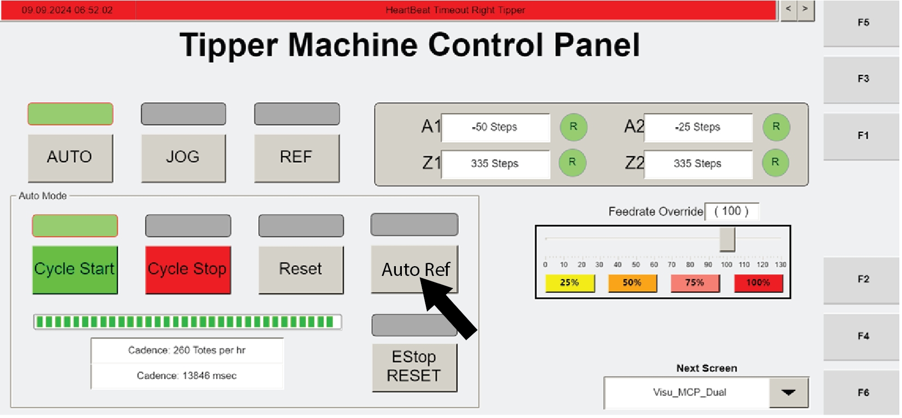

| Procedure ID | proc_recover_non_recoverable_fault_agv_stuck_hmi_cellio_status_out_w1_forced_value_v1 |
|---|---|
| Title | Recover Non-Recoverable Fault: AGV Stuck Using Operator Station HMI (Visu_ManControl → CellIO Status → OUT W1 forced value) |
| Procedure Type | recovery |
| Primary Role | operator |
| Support Safe | Yes |
| Capability Tags | agv_physical_recovery, tipper_station_fault, hospital_diversion |
| Access Surface | tipper_hmi |
| Audience Roles | operator |
| Failure Pattern Tags | None |
| Validation Status | needs_sme_review |
| Merge Status | source_finalized |
On the operator station HMI, verify the non-recoverable AGV-stuck fault by confirming the selected tipper shows OUT Fault Status = 82 on the CellIO Status screen. Then force OUT W1 to either 3 (continue work) or 32771 (send the AGV to the hospital) by entering the value, checking the enable checkbox, waiting 10 seconds, and unchecking. Finally, press CYCLE START to restart operation.
Use when an AGV remains at the tipper after tote-tipping is complete (non-recoverable fault), and the operator station HMI indicates the AGV-stuck condition that requires forcing OUT W1 via the CellIO Status screen.


Responsible role: operator
Instruction:
On the operator station HMI, navigate to the "Visu_ManControl" screen.
Expected result:
The "Visu_ManControl" screen is displayed on the operator station HMI.
Responsible role: operator
Instruction:
Press the "CellIO Status" button on the "Visu_ManControl" screen.
Expected result:
The CellIO Status screen (cell control input/output values per tipper) is opened.
Responsible role: operator
Instruction:
Select the tipper where the AGV is stuck.
Expected result:
The selected tipper on the CellIO Status screen corresponds to the tipper where the AGV is currently stuck.
Responsible role: operator
Instruction:
Verify the "OUT Fault Status" field shows value 82 for the selected stuck tipper.
Expected result:
"OUT Fault Status" shows value 82 for the selected tipper.
Stop or Escalate If:
Responsible role: operator
Instruction:
Ensure the correct tipper is selected, then enter a forced value in the "OUT W1" forced value box: use 3 if the tote and AGV are ready to continue working, or 32771 if the AGV needs to go to the hospital.
Expected result:
The "OUT W1" forced value box contains either 3 or 32771 as selected for the recovery outcome.
Responsible role: operator
Instruction:
Check the box next to the value introduced in the forced value box.
Expected result:
The checkbox enabling the forced OUT W1 value is checked (enabled).
Responsible role: operator
Instruction:
Wait 10 seconds, then uncheck the box for value OUT W1.
Expected result:
After 10 seconds, the OUT W1 forced-value enable checkbox is unchecked.
Responsible role: operator
Instruction:
Press "CYCLE START" to restart operation.
Expected result:
"CYCLE START" is pressed and operation restart is initiated.
Stop or Escalate If: